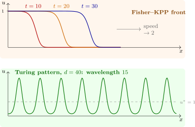

14.2 Travelling waves
A travelling wave is a solution \(u = U(x - ct)\) of fixed shape moving at speed \(c\). Substituting, \(U(z)\) satisfies the ordinary differential equation \[ U'' + cU' + f(U) = 0, \qquad U(-\infty ) = 1, \quad U(+\infty ) = 0 , \] a front in which the state \(1\) invades the state \(0\). As a first-order system for \((U, U')\), a front is a heteroclinic orbit from the equilibrium \((1, 0)\) to \((0, 0)\), and the question is for which \(c\) it exists.
Theorem 14.2.1 (Fisher–KPP fronts). For \(f(u) = u(1 - u)\) there is a monotone travelling front with \(0 \leq U \leq 1\) for every \(c \geq 2\), and for no \(c < 2\). Solutions starting from data equal to \(1\) on a half-line and \(0\) beyond converge in shape to the front of the minimal speed \(c^* = 2\); in physical units \(c^* = 2\sqrt {rD}\).
Proof of the speed bound, and sketch of the rest. Near \((0, 0)\) the linearisation is \(U'' + cU' + U = 0\), with characteristic roots \(\lambda = \frac 12\bigl (-c \pm \sqrt {c^2 - 4}\bigr )\). If \(c < 2\) they are complex, the orbit spirals into the origin, and \(U\) changes sign infinitely often, which is impossible for a front with \(U \geq 0\). If \(c \geq 2\) the origin is a stable node. The point \((1, 0)\) is a saddle, since there the linearisation is \(V'' + cV' - V = 0\); for \(c \geq 2\) one shows that the branch of its unstable manifold entering the strip \(0 < U < 1\), \(U' < 0\) stays in the triangle bounded by \(U' = 0\), \(U = 1\) and the line \(U' = -\frac c2U\), which the flow cannot leave, and so must reach the node. The convergence statement is the theorem of Kolmogorov, Petrovsky and Piskunov; Bramson (1983) showed that the front’s position is \(2t - \frac 32\log t + O(1)\), so its speed approaches \(2\) from below like \(2 - \frac 3{2t}\). □
The minimal speed is set by the leading edge, where \(u\) is small and the equation is nearly the linear \(u_t = u_{xx} + u\). Trying \(u = e^{-\lambda (x - ct)}\) gives \(c = \lambda + 1/\lambda \), whose least value over \(\lambda > 0\) is \(2\), at \(\lambda = 1\). Such fronts are pulled: the growth of a few individuals far ahead of the bulk sets the pace. Skellam (1951) used this to explain the steady radial spread of muskrats in central Europe after a few escaped in 1905: the occupied radius grew linearly in time, as the theorem predicts, and not like \(\sqrt t\), as pure diffusion would.
For the bistable equation the speed is unique, and there is an exact solution (Software 14.4.1): \[ U(z) = \frac 1{1 + e^{z/\sqrt 2}}, \qquad c = \sqrt 2\Bigl (\frac 12 - a\Bigr ) . \] If \(a < \frac 12\) the state \(1\) invades; if \(a > \frac 12\) it retreats; at \(a = \frac 12\) the front stands still. Such fronts are pushed: the speed is set by the whole profile, not the leading edge. The Nagumo equation is a simplified model of the electrical pulse along a nerve fibre, whose full description is the Hodgkin–Huxley system.

Questions on this section
Stuck on something here? Ask below and it stays attached to this topic.